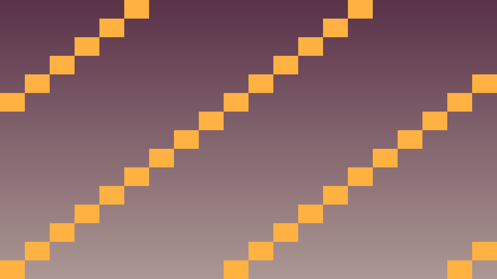
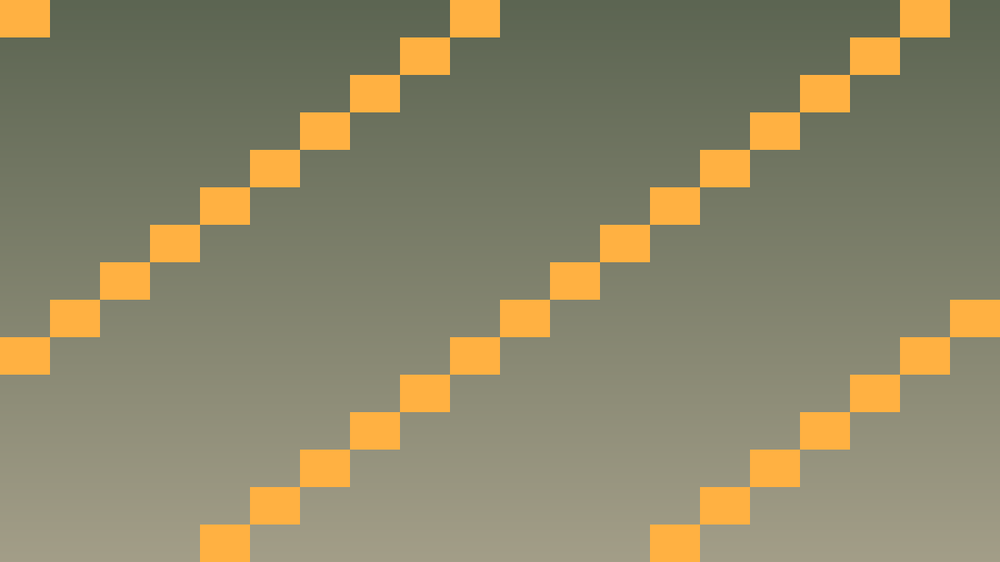

4.4 Pathfinding (ceļa meklēšana) ar A*
Stundas uzdevums: Saprast un implementēt pathfinding algoritmu spēles AI (mākslīgais intelekts).
80 min plāns: Teorija un paraugs (~10 min) · 1. uzdevums (~20 min) - sagatavo navigation region (navigācijas reģionu) · 2. uzdevums (~25 min) - liec ienaidniekam sekot ceļam · 3. uzdevums (~20 min) - salīdzini taisno kustību ar pathfinding · Iesniegšana (~5 min).
Pirms sāc: atver savu projektu ar state machine (stāvokļu mašīnu) no 4.3 stundas. Šodien ienaidnieks vairs neiestrēgs aiz sienas.
Failu ceļi: ceļi ir norādīti no tava Godot projekta mapes, kur atrodas project.godot; piemēram, Scripts/Player.cs Godot panelī ir res://Scripts/Player.cs. Ja norādītais fails jau ir izveidots, atver un papildini to.
Jaunus C# failus veido mapē Scripts, scēnas — norādītajā ceļā; trūkstošās mapes izveido. Ja tavā projektā skripts glabājas citur, rediģē esošo failu. using direktīvas raksti faila sākumā, laukus un metodes — klases iekšienē. Esošu _Ready() vai _PhysicsProcess() papildini, neveido otru tāda paša nosaukuma metodi.
Teorija: ceļa meklēšanas algoritms A* un navigācijas tīkls
Ceļa meklēšana (pathfinding) un A* novērtējuma funkcija
Virzoties taisnā līnijā tieši pret mērķa koordinātām, kustīgais objekts apstājas pie pirmās šķērssienas vai U veida norobežojuma. Ceļa meklēšana (pathfinding) pārvietošanās telpu attēlo kā savienotu punktu jeb virsotņu grafu un atrod tajā īsāko brīvo maršrutu — līdzīgi kā navigācijas lietotne telefonā nevelk taisnu līniju cauri ēkām un upei, bet izplāno ceļu pa pieejamajām ielām un tiltiem.
Viens no efektīvākajiem maršruta meklēšanas algoritmiem ir A* (A-star), kas katram kandidāta punktam n aprēķina trīs lielumus:
g(n)— faktiski jau veiktais ceļa garums no sākumpunkta līdz punktamn;h(n)— heuristika (heuristic) jeb aptuvenais novērtējums (parasti taisnais attālums) no punktanlīdz galamērķim;f(n) = g(n) + h(n)— kopējais novērtējums; algoritms vienmēr pirmo pārbauda to virzienu, kuramf(n)ir vismazākais, tāpēc lieki nepēta ceļus pretējā pusē.
Navigācijas reģions (NavigationRegion2D) un NavigationAgent2D
Godot 4 vidē ceļa meklēšana ir sadalīta divās daļās: mezgls NavigationRegion2D ar resursu NavigationPolygon apraksta brīvi šķērsojamo laukumu, no kura ar darbību Bake NavigationPolygon izgriež nekustīgos šķēršļus, izveidojot navigācijas tīklu (navigation mesh) (ja mērķis nonāk ārpus šī tīkla, ceļš ved līdz tuvākajai sasniedzamajai malas vietai).
Savukārt kustīgajam CharacterBody2D kā bērnmezglu pievieno NavigationAgent2D, kas A* aprēķinu veic automātiski: īpašībai TargetPosition uzdod mērķa koordinātas, ar IsNavigationFinished() pārbauda, vai maršruts jau pabeigts, bet ar GetNextPathPosition() katrā fizikas solī nolasa nākamo pagrieziena punktu:
if (navAgents.IsNavigationFinished()) return;
Vector2 nakamaisPunkts = navAgents.GetNextPathPosition();
Vector2 virziens = (nakamaisPunkts - Position).Normalized();
Velocity = virziens * Atrums;
MoveAndSlide();Kā šo izmantot projektā
Atceries: ar redzamu efektu redaktorā nepietiek. Paskaidro, kura C# class (klase) glabā stāvokli, kura method (metode) to maina un kā Godot node (mezgls) struktūra izmanto šo kodu.
Pārbaudi: C# kodā pamatoti izvēlēti List (saraksts), Dictionary (vārdnīca) vai HashSet (jaucējkopa), AI stāvokļi ir skaidri, un sarežģītākas sistēmas var profilēt vai atkļūdot.
public class AiDataCheckpoint
{
public string Lesson = "4.4 Pathfinding ar A*";
public bool UsesCSharp = true;
public bool ChoosesContainer = true;
public bool SeparatesAiState = true;
public bool HandlesRemovalSafely = true;
}Praktiskie uzdevumi
1. uzdevums -
Sagatavo navigation region
Kur strādāt: Godot redaktorā atver spēles līmeņa scēnu un šajā tēmā saglabā to kā Scenes/Arena.tscn. Tajā veido navigācijas reģionu un sienas.
Beigās Godot zinās, pa kurām vietām drīkst staigāt.
- Pievieno scēnai node
NavigationRegion2D(2D navigācijas reģions). - Izveido tam
NavigationPolygon(navigācijas daudzstūris) resursu Inspector panelī. - Uzzīmē daudzstūri, kas aptver visu staigājamo laukumu.
- Pievieno laukumā divas sienas kā
StaticBody2D(nekustīga 2D ķermeņa mezgls). - Izgriez navigācijas daudzstūrī caurumus ap sienām.
- Nospied Bake NavigationPolygon (aprēķināt navigācijas daudzstūri).
- Pārbaudi, ka zilā zona neiet pāri sienām.
Gatavs, kad: navigation region aptver grīdu, bet ne sienas, un tā ir redzama redaktorā zilā krāsā.
2. uzdevums -
Liec ienaidniekam sekot ceļam
Kur strādāt: NavigationAgent2D pievieno ienaidnieka scēnā Scenes/Enemy.tscn (saglabā tajā esošo ienaidnieku, ja atsevišķas scēnas vēl nav). Papildini Scripts/Enemy.cs: aģenta atsauci glabā klases laukā, atrodi to _Ready(), mērķa un kustības kodu pievieno _PhysicsProcess() dzīšanās stāvoklim.
Beigās ienaidnieks apstaigās sienu, nevis iestrēgs tajā.
- Pievieno ienaidniekam child node (bērnu)
NavigationAgent2D. - Atver ienaidnieka C# failu un pārliecinies, ka sākumā ir
using Godot;. - Paņem aģentu kodā ar
NavigationAgent2D agent = GetNode<NavigationAgent2D>("NavigationAgent2D");. - Iestati mērķi ar
agent.TargetPosition = playerPos;. - Paņem nākamo punktu ar
Vector2 next = agent.GetNextPathPosition();. - Virzies uz to ar
(next - Position).Normalized() * Speed. - Būvē un noliec spēlētāju aiz sienas.
private NavigationAgent2D navAgent;
[Export] public float Speed = 180.0f;
public override void _Ready()
{
navAgent = GetNode<NavigationAgent2D>("NavigationAgent2D");
}
// Metodē _PhysicsProcess(double delta) dzīšanās režīmā:
navAgent.TargetPosition = playerPos;
if (!navAgent.IsNavigationFinished())
{
Vector2 nextPos = navAgent.GetNextPathPosition();
Vector2 dir = (nextPos - Position).Normalized();
Velocity = dir * Speed;
MoveAndSlide();
}Gatavs, kad: ienaidnieks apiet sienu apkārt un nonāk pie spēlētāja, nevis spiežas sienā.
3. uzdevums -
Salīdzini taisno kustību ar pathfinding
Kur strādāt: Taisno kustību un ceļa sekošanu pārmaiņus izmēģini Scripts/Enemy.cs metodē _PhysicsProcess(). Spēlētāja vietu maini Scenes/Arena.tscn; rezultātus raksti README.md.
Beigās tu redzēsi, ko tieši pathfinding atrisina.
- Nomaini kodu uz taisnu kustību tieši pret spēlētāju, bez agenta.
- Noliec spēlētāju aiz sienas un palaid.
- Pieraksti, kur ienaidnieks apstājās.
- Ieliec pathfinding kodu atpakaļ un atkārto to pašu testu.
- Pieraksti, cik ilgi tagad aizņēma nonākšana pie spēlētāja.
- Pārbaudi, kas notiek, ja spēlētājs ir ārpus navigācijas zonas.
- Pieraksti, ko dara
gun kohA* algoritmā.
Gatavs, kad: bez pathfinding ienaidnieks iestrēgst pie sienas, bet ar to - apiet apkārt.
Papildu uzdevums - Zīmē ceļu uz ekrāna
Kur strādāt: Line2D pievieno Scenes/Enemy.tscn. Tā atsauci un punktu atjaunošanu pievieno Scripts/Enemy.cs: mezglu atrodi _Ready(), ceļu atjauno _PhysicsProcess().
Ja pamatdarbs ir gatavs, parādi, pa kuru ceļu ienaidnieks iet.
- Paņem pilnu ceļu ar
agent.GetCurrentNavigationPath();. - Pievieno scēnai
Line2D(2D līnija) node. - Iestati tā punktus uz ceļa punktiem katrā kadrā.
- Palaid un vēro, kā līnija mainās, kustinot spēlētāju.
- Pieraksti, cik punktu parasti ir ceļā.
Gatavs, kad: ekrānā redzama līnija, kas rāda ienaidnieka plānoto ceļu ap sienu.
Ko sagatavo
Stundas mērķis: Tavā līmenī ir izcepts navigation region, un ienaidnieks ar NavigationAgent2D apiet sienas, lai nonāktu pie spēlētāja, nevis iestrēgst pret tām.
GitHub krātuvē jābūt:
- README.md ievietota video saite, kurā ienaidnieks apiet sienu, lai nonāktu pie spēlētāja.
- Ekrānuzņēmums ar navigation region redaktorā (zilā zona ap sienām).
- Fails
Enemy.csarNavigationAgent2Dkodu. - README.md: ko A* algoritmā nozīmē
gun koh.
Kā iesniedz: Veic commit (izmaiņu fiksējums) un push (nosūtīšana uz attālo krātuvi). Skolotāja norādītajā vietā ievieto tikai GitHub krātuves saiti; visiem prasītajiem failiem, README.md pierakstiem un pierādījumiem jābūt pašā krātuvē.
Biežākās kļūdas
- NavigationAgent neatrod ceļu: NavigationPolygon nav baked vai nepareiza forma.
- Ienaidnieki iestrēgst stūros: Ceļš radius (rādiuss) pārāk mazs vai šķēršļi pārāk tuvu.
- Slow veiktspēja: Pārāk daudz NavigationAgent - pārbaudi update freq.
Godot ekrānuzņēmumi


Koda piemērs (paplašināts)
using Godot;
public partial class Enemy : CharacterBody2D
{
private NavigationAgent2D navAgent;
private Player player;
[Export] public float Speed = 180.0f;
public override void _Ready()
{
navAgent = GetNode<NavigationAgent2D>("NavigationAgent2D");
navAgent.AvoidanceEnabled = true;
UpdateTarget();
}
public override void _PhysicsProcess(double delta)
{
if (navAgent.IsNavigationFinished()) return;
Vector2 next = navAgent.GetNextPathPosition();
Vector2 direction = (next - Position).Normalized();
Velocity = direction * Speed;
MoveAndSlide();
}
private void UpdateTarget()
{
if (player != null) navAgent.TargetPosition = player.Position;
}
}